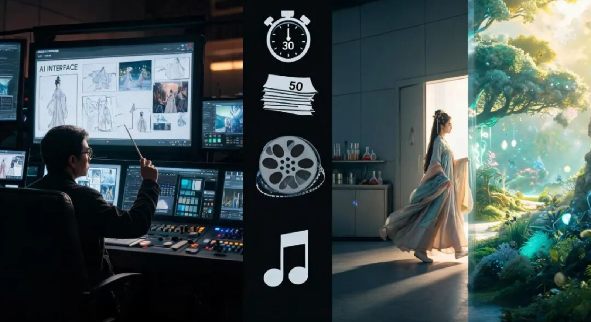

上个月，OpenAI悄悄关停了Sora。
这事在圈内引起的震动，比很多人想象的大得多。同一个月，可灵AI估值缩水，谷歌挤进赛道，而就在所有人以为AI视频已经卷成红海的时候，火山引擎甩出了Seedance 2.5。
30秒原生，不只是翻倍
很多人看Seedance 2.5的升级清单，第一眼就是“15秒变30秒，翻倍了”。这个理解太浅了。15秒的AI视频只够塞进去一个动作。但30秒是另一回事，它能装下一段完整的叙叙事弧线——人物情绪递进、场景切换、镜头推进。
“AI视频终于从‘做预告片’进化到了‘讲故事’。Seedance 2.5还支持延长功能，最多可以拼到3分钟。”
50个素材，进入“全模态参考式创作”
另一个被低估的升级是参考素材的上限——从12个飙到50个。重点在于“全模态”。你可以同时喂进30张角色定妆照、10段参考视频、10段氛围音频。以前做AI视频像“念咒抽盲盒”，现在变成了真正的生产力流水线。别再纠结提示词了，找好参考图、找准素材才是关键。

局部编辑，AI视频的“后期时代”与Agent-Skill广场
Seedance 2.5给出了真正的“后期逻辑”。你可以框选某一秒里的某个区域，只修改那一个元素，其余99%的画面纹丝不动。同时，字节推出的 Agent-Skill 广场把顶级创作者沉淀下来的成片工作流打包，用户一键调用，极大降低了专业视频的门槛。
这与 Sora 的失败形成鲜明对比。Sora 到死都只有一个模型，没有分发平台和创作者生态，死在“闭门造车”四个字上。硬件模型可以年年迭代，但生态一旦成型，壁垒就建起来了。下半场的游戏规则，刚刚开始显形。